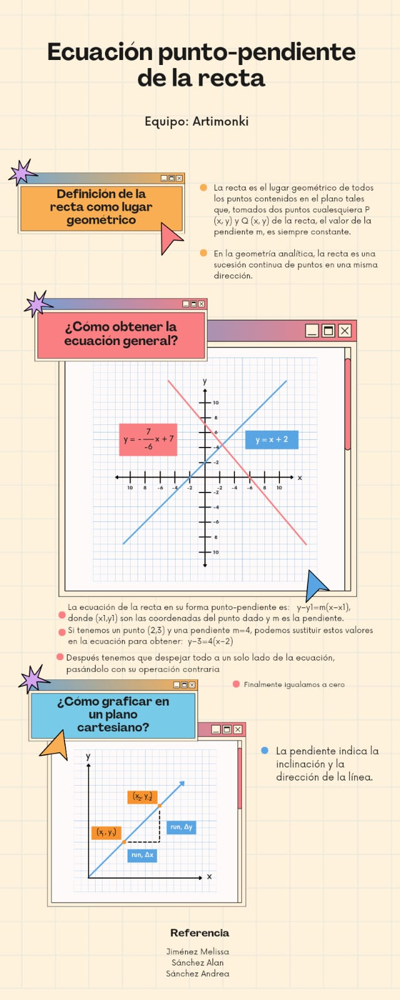

¡Bienvenidos al portal de Geometría Analítica para estudiantes del CEDART! Sumérgete en el fascinante mundo de las formas geométricas y sus representaciones matemáticas. Nuestra plataforma está diseñada para proporcionarte información esencial sobre ecuaciones de rectas y cónicas, dos pilares fundamentales de la geometría analítica.
A través de una interfaz simple pero informativa, encontrarás una recopilación de conceptos clave, ilustrados con imágenes que facilitan la comprensión visual. Entender la importancia de la geometría analítica en el estudio de las formas y sus relaciones es crucial para tu desarrollo académico y profesional.
Explora nuestras secciones dedicadas a las ecuaciones de rectas y cónicas, donde podrás profundizar en sus definiciones, características y aplicaciones prácticas. Aunque nuestra página es estática, te proporcionamos un recurso confiable para consolidar tus conocimientos y reforzar tu aprendizaje en geometría analítica.
¡Prepárate para desentrañar los misterios de las formas geométricas y dominar las ecuaciones que las gobiernan! En nuestro portal, encontrarás el apoyo necesario para avanzar en tu comprensión de este fascinante campo matemático.
Infografía:
